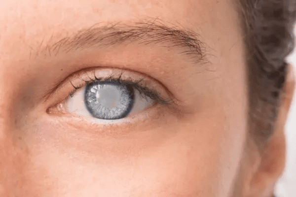
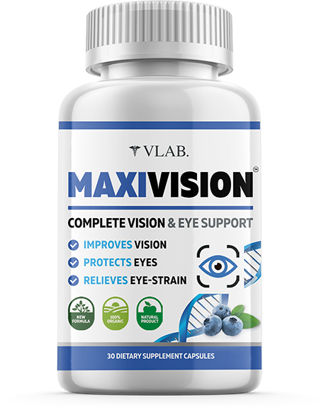
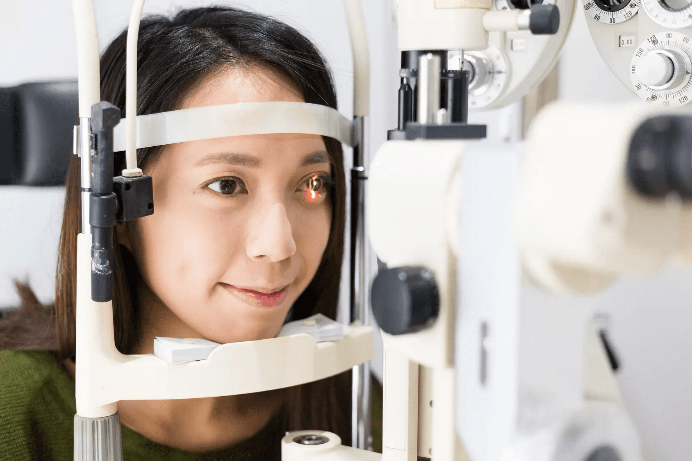

Bună ziua, doctor Dragan. Acum vom vorbi despre cum să menținem o vedere clară și ce măsuri ar trebui luate dacă începe să se estompeze.
Salutări! Vă mulțumesc foarte mult pentru oportunitatea de a vă împărtăși cunoștințele mele și de a răspunde la toate întrebările dvs. despre cele mai recente realizări în domeniul oftalmologiei.
Dr. Dragan, câți oameni din lume au probleme de vedere și ce boală le provoacă de obicei?
Astăzi, foarte puțini oameni au o vedere perfectă. Potrivit Organizației Mondiale a Sănătății (OMS), 2 miliarde de oameni au probleme de vedere. Motivele la jumătate dintre ele sunt neglijența personală și îngrijirea rea a ochilor.
O problemă gravă începe cu o simplă vedere încețoșată. Dacă ignori acest lucru, atunci mai târziu boala se poate dezvolta în unul din cele trei scenarii - cataractă, glaucom sau distrofie a părților centrale ale retinei. Cataracta este o opacitate parțială sau completă a cristalinului, care te face să vezi în ceață. În cazul distrofiei retiniene, vederea centrală și a culorii scade, iar în cazul glaucomului, vederea se pierde irevocabil - nu poate fi restabilită, deoarece nervul optic central moare.
Se pare că glaucomul este cea mai gravă boală dintre cele trei. Cum poate fi explicat acest lucru?
Când vederea începe să se încețoșeze, nici nu vei suspecta că ai glaucom. În stadiile incipiente, este foarte dificil de diagnosticat, deoarece boala poate fi asimptomatică și pacientul nu simte niciun disconfort. Glaucomul este adesea detectat numai atunci când un ochi este orb, iar celălalt este întunecat. Glaucomul este cea mai comună formă de boală oculară în prezent. Cataracta și distrofia retiniană sunt pe locul al doilea și reprezintă, de asemenea, un mare pericol pentru vedere.

De ce se deteriorează vederea chiar și la tineri?
Există multe motive posibile. Se știe că sănătatea noastră depinde parțial de genetică, dar, în majoritatea cazurilor, principala cauză a problemelor de vedere este stilul nostru de viață - obiceiuri proaste, lucrul în lumină slabă, lipsa vitaminelor, purtarea lentilelor de contact etc.
Ce tip de tratament se administrează de obicei astăzi?
Există trei tipuri de tratament: conservator (medicament), chirurgical și laser. Tipul de tratament care va fi utilizat depinde de afecțiune. Glaucomul poate fi tratat prin scăderea presiunii intraoculare, îmbunătățirea circulației sângelui și normalizarea metabolismului țesutului ocular.
Acest lucru înseamnă că poate fi vindecat fără intervenție chirurgicală și corecție cu laser?
Persoanele cu miopie și hipermetropie, a căror vedere începe să se estompeze, pot opri și elimina acest proces cu ajutorul produselor naturale. Datorită unei combinații speciale de substanțe active, este posibilă nu numai prevenirea dezvoltării unor boli grave, cum ar fi distrofia, cataracta și glaucomul, dar chiar și restabilirea acuității vizuale cu 100%.
Vă rugăm să ne spuneți mai multe despre aceasta, dr. Dragan.
Vorbesc despre bioregulatori peptidici unici pentru țesuturile oculare. Ei au capacitatea de a întări retina cu 50-90% și de a restabili sănătatea a întregului ochi. Acestea constau din lanțuri scurte de aminoacizi și acționează ca un regulator la nivel celular.
De unde pot obține un astfel de produs?
Unul dintre cele mai populare produse cu concentrație mare de peptide pe care îl recomand tuturor pacienților mei este . Întărește structura celulelor din retină și vasele de sânge, restabilește biosinteza proteinelor la normal și ajută la reglarea expresiei genomului. Odată ajunse în organism, aceste capsule trimit un semnal special către ADN. Informațiile primite de celule declanșează inițierea procesului de vindecare a proteinelor, stabilizarea capilarelor și revenirea vederii la normal.

Înseamnă asta că toate persoanele cu probleme de vedere pot fi vindecate?
Cel mai adesea, da. Am testat capsulele pe pacienți cu probleme retiniene și corneene.
Toți acești oameni au avut probleme de vedere, procese distrofice, disfuncție a vaselor de sânge din globii oculari. În unii din ei, boala s-a răspândit treptat în alte părți ale ochiului. Când a fost început cursul , 98% dintre pacienți au obținut o dinamică pozitivă, indiferent de ce fel de boală au avut sau cât de gravă a fost. De asemenea, acest produs ajută la miopie și hipermetropie.
Care este rezultatul pacienților dumneavoastră?
Când prescriu д pacienților mei, absolut toți, inclusiv cei cu hipermetropie sau miopie, spun că după tratament vederea lor este semnificativ îmbunătățită.
De asemenea, s-a observat că le-au dispărut blefarospasmul, fotofobia, lăcrimarea. După cursul complet al tratamentului , se observă mărirea vederii periferice, iar punctele oarbe ale vederii scad și uneori dispar complet.

Ce boli oculare tratează acest produs?
Produsul are un spectru larg de acțiune. Aceasta înseamnă că capsulele au un efect de vindecare complex și, prin urmare, pot vindeca multe boli oculare, inclusiv. întărește mușchii ochilor. După doar un curs de tratament, veți observa îmbunătățiri semnificative:
- Iritația, inflamația și oboseala oculară vor dispărea;
- Sindromul de ochi uscat va dispărea și el;
- Presiunea intraoculară va reveni la normal;
- Claritatea vederii va crește;
- Ochii tăi vor fi protejați de diferite boli.
Există persoane pentru care acest produs este contraindicat?
constă în întregime din ingrediente naturale familiare organismului nostru. Prin urmare, capsulele nu provoacă o reacție imună, sunt absolut sigure pentru persoanele cu boli cronice și chiar pentru cei care suferă de alergii. De asemenea, este important ca produsul nu are efecte secundare și nu crează dependență.
Din păcate, acest produs nu se găsește în farmacii. Deoarece este foarte eficient, lanțurile de farmacii sunt de acord să ia produsul la vânzare numai dacă prețul crește semnificativ de 3-5 ori. Faptul este că vânzarea acestor capsule va " lovi ” profiturile lor, deoarece alte produse pentru sănătatea ochilor mai puțin eficiente vor înceta pur și simplu să mai cumpere! Dar acest lucru este complet neprofitabil pentru cumpărători - oamenii obișnuiți nu ar trebui să sufere din cauza afacerii altcuiva. Toată lumea ar trebui să poată primi un tratament eficient la un preț accesibil. Recomand să cumpărați numai direct de la producător pe Internet. Livrarea produsului se face prin curier în orice punct din România, atunci când cumpărați cursul complet - nu trebuie să plătiți nimic în plus.
Mulțumesc pentru interviul informativ! Sunt sigur că mulți români au primit cunoștințe foarte valoroase datorită dvs. și vor putea să-și refacă sănătatea ochilor.
Mulțumesc pentru invitație! Sper că am răspuns la toate întrebările importante într-un mod simplu și de înțeles, chiar și pentru persoanele fără studii medicale.